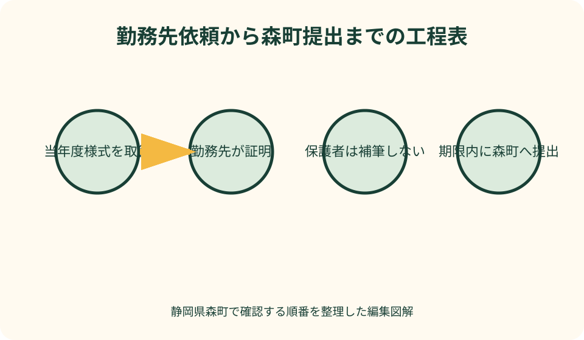
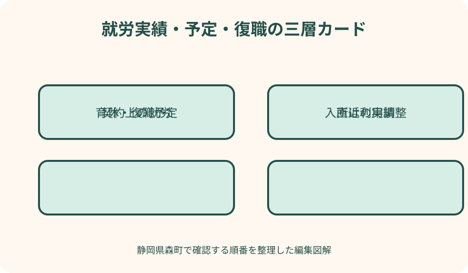

妊娠・子育て手続｜最終確認 2026-08-10
静岡県森町の保育所申込みと就労証明書｜勤務先依頼から提出まで
就労証明書は、保護者が自分の勤務状況を説明するメモではなく、勤務先など証明する側が所定の項目を記載する書類です。森町の入所申込みでは、対象年度の案内、証明日、申込期間、世帯で必要な提出者、自営業の追加資料、育児休業からの復職条件まで確認する必要があります。早めに様式を確定し、勤務先の作成日数を逆算するのが基本です。

編集イラスト静岡県森町の就労証明書で最初に確かめること
最初に確かめるのは、何年度の何月入所を希望するかです。森町は年度初めの4月入所だけでなく、育休明けなど年度途中の入所希望も募集期間内に申し込むよう案内しています。希望月が先でも、書類準備を入所直前まで待たないことが重要です。
次に、森町公式の対象年度ページから就労証明書のPDFまたはExcelを取得します。国には標準的な様式がありますが、実際の提出先は森町です。国のファイルや前年度の保存版を先に勤務先へ渡さず、町が当年度用として掲載する様式を優先します。
令和8年度案内では、就労証明書は証明日から3か月以内のものを提出するよう示されています。早すぎる発行で期限外にならないよう、申込締切、勤務先の作成日数、再発行に必要な日数を一枚の予定表へ並べます。
この記事の確認日は2026年8月10日です。申込期間、受付時間、様式、必要書類は年度ごとに変わり得ます。次年度以降の申込みでは、この記事の具体的な日付を使わず、森町公式の最新年度ページと健康こども課幼稚園保育園係の案内を確認してください。
対象年度の様式を取り違えない
就労証明書は見た目が似ていても、項目や注記が改訂されることがあります。ファイル名へ『森町』『入所年度』『取得日』を付け、勤務先へ送った版と提出した版を追えるようにします。ダウンロード元のURLも保存します。
前年にきょうだいの申込みで使ったExcelがパソコンに残っていても、上書き利用は避けます。証明日だけ新しくしても、古い様式の項目不足が残る可能性があります。勤務先が過去データを複製する場合は、町の最新版へ転記してもらいます。
こども家庭庁は利用調整事務に使う就労証明書の標準的な様式を公開しています。標準化は勤務先の作成負担を減らす助けになりますが、自治体ごとの運用や追加書類がなくなるわけではありません。森町の申込案内と記載例を合わせて渡します。
PDFへ手書きするかExcelへ入力するかは、勤務先の作成方法と町の受付方法を確かめます。電子申請を利用する場合でも、就労証明書のファイル形式、画像の鮮明さ、添付上限を事前に確認し、締切直前の変換作業を避けます。
勤務先へ依頼する前の準備
勤務先へは、就労証明書の様式だけでなく、森町への提出であること、対象の入所年度、希望する発行期限、返却方法を伝えます。人事、総務、店長、本部など、誰に依頼すべきか社内規程を確認し、口頭だけで頼まず記録が残る方法を使います。
依頼日は、森町の提出締切から逆算します。勤務先の標準作成日数、郵送日数、内容確認、修正依頼の時間を含め、余裕を持たせます。繁忙期や本社一括発行では数週間かかることもあるため、家族の経験だけで必要日数を決めません。
勤務先へ伝える本人情報は、氏名、生年月日、実際の就労先、雇用開始日など、作成に必要な範囲に限定します。子どもの申込先や家庭事情を独自欄へ書き足すのではなく、証明書の項目と記載要領に沿ってもらいます。
提出先からの照会に備え、証明内容へ回答できる勤務先担当者の連絡先が正しく記載されるかを確認します。こども家庭庁の記載要領も、自治体から事務連絡を受ける担当者名・電話番号の記載を求めています。
勤務先への依頼文を具体化する
依頼文の件名は『森町保育所等入所申込み用・就労証明書作成のお願い』とし、必要日を明記します。本文には対象年度、町の様式を添付したこと、証明日の条件、返却希望日、問い合わせ先を短くまとめます。
育児休業中なら、現在の休業期間と復職予定日を社内記録に基づいて記載してもらう必要があることを伝えます。保護者が希望する復職日と会社が証明できる予定日が異なる場合、勝手に希望日へ合わせず、会社と町へ順に相談します。
勤務時間がシフト制、変形労働時間制、短時間勤務予定などの場合は、どの欄へ契約上の時間と実績を書くかを記載例で確認してもらいます。保護者が月平均を計算して会社欄へ転記せず、証明権限のある担当者に判断を委ねます。
完成品は、紙なら封緘の要否、データなら編集可能なExcelか確定済みPDFかを町へ確認します。勤務先独自の電子署名や押印の扱いも、古い慣行で決めず、当年度の森町案内と会社の発行手順を照合します。
就労実績と就労予定を混ぜない
就労証明書には、契約上の就労時間と直近の実績、今後の予定など異なる性質の情報が含まれます。育休、休職、欠勤、入社直後などで実績が少なくても、空欄を保護者が推測で埋めず、勤務先が記載要領に従って説明します。
契約上の勤務日数・時間は、労働契約や就業規則に基づく情報です。残業を含む実際の帰宅時刻、通勤時間、保護者が希望する保育時間とは別なので、それぞれを同じ数字にしようとしないことが大切です。
直近の就労実績が通常月と異なる場合は、理由を勤務先の担当者へ伝え、備考欄など所定の方法で説明できるか相談します。保護者の都合で実績月を選び直したり、勤務日数を平均化して書き換えたりしません。
採用内定や雇用開始前で予定を証明する場合は、雇用開始予定日、契約期間、予定勤務時間を会社が確認できる資料に基づいて記載します。予定どおり開始できなかったときの連絡と再提出について、森町へ先に確認しておくと安心です。
月64時間という要件の読み方
令和8年度の森町案内は、就労を保育が必要な事由とする場合、勤務形態を問わず月64時間以上就労していることを示しています。ただし、この数字だけで入所可否や保育時間が自動的に決まるわけではありません。
月64時間を満たすか家庭で独自計算し、勤務先へ数値を合わせるよう依頼してはいけません。契約時間、休憩、実績、短時間勤務の扱いなど、証明書の各欄を勤務先に正確に記載してもらい、評価は森町へ委ねます。
複数の勤務先がある場合、証明書を何枚用意するか、合算できる範囲、各勤務先に求める記載は健康こども課へ確認します。一社の証明書へ他社の時間を書き足さず、証明責任を勤務先ごとに分けます。
通勤時間や送迎時間は、勤務時間そのものとは別です。家庭状況確認シートなど他の書類で求められる事項と就労証明書の会社記載欄を混ぜず、どの資料へ何を書くか申込チェックシートで確認します。
育児休業から復職する場合
森町は、育児休業明けの新規入所を『就労』での申請と案内しています。就労証明書には育児休業の期間と復職予定を勤務先に記載してもらい、申込書の入所希望月と矛盾がないかを確認します。
令和8年度案内では、新規申込みで育児休業中の人は休業期間中に入所できず、復職する月または前月の初日から入所する扱いが示されています。さらに職場復帰日が1日から15日なら前月初日、16日から末日なら当月初日という入所可能日の考え方があります。
入所月に応じて育児休業期限を切り上げる予定がある場合、会社が証明できる復職予定日と保護者の希望を一致させます。入所が決まったときだけ短縮する条件なら、その旨を会社と町へ説明し、書類の表現を自己判断で作りません。
森町は、職場復帰後に就労証明書の提出が必要と案内しています。内定時に提出した予定証明だけで終わりにせず、復職後の再提出期限、勤務条件が変わった場合の追加書類、提出先を確認します。
短時間勤務・シフト・在宅勤務を伝える
復職後に育児短時間勤務を利用する場合は、通常の契約時間と短時間勤務中の時間を、様式の該当欄へ勤務先が記載します。利用予定期間や勤務時間帯が未確定なら、確定見込みと町への追加連絡が必要かを相談します。
シフト制では、固定の開始・終了時刻だけで実態を表せないことがあります。代表的な時間帯、月の勤務日数、実績欄など、様式が求める範囲を会社に記載してもらい、保護者は送迎可能時間を別の申込欄へ正確に書きます。
在宅勤務がある場合も、勤務地を空欄にしたり自宅住所を勝手に加えたりせず、こども家庭庁の記載要領と会社の証明内容に従います。在宅日と出社日で送迎条件が違うことは、町へ必要な伝え方を確認します。
夜勤、交代勤務、変則的な休日がある家庭は、勤務先の証明とは別に、家庭状況や希望保育時間を説明する資料が必要か尋ねます。複雑な勤務だから入所が有利・不利になると記事で決めることはできません。
自営業・農林漁業で用意する追加資料
森町の令和8年度案内では、自営業・農林漁業等従事者と専従者は、就労証明書に加えて開業届・確定申告書等の写しを提出するよう明記されています。就労証明書だけで完了と思わず、追加資料を早めに確認します。
自営業主、自営業専従者、家族従業者は、こども家庭庁の標準様式でも雇用形態が分けられています。自分の働き方がどれに当たるか迷う場合、都合のよい区分を選ばず、事業の形態と報酬の有無を町へ説明します。
開業したばかりで確定申告書がない、事業承継中、農業と別の仕事を兼ねるなど、通常の追加書類がそろわない場合は、代わりに何を提出できるか健康こども課へ事前相談します。記事から代替書類を断定しません。
事業時間は、営業時間だけでなく準備や事務を含む場合がありますが、何を就労として記載するかは様式と町の確認に従います。家庭のメモ、売上資料、取引記録をそのまま提出する前に、必要な範囲と個人情報の扱いを尋ねます。

父母と同居親族の必要書類を整理する
森町の令和8年度案内は、父母と65歳未満の同居親族全員分について、保育を必要とする事由を証する書類が必要としています。同居には二世帯住宅、同一敷地内の別棟、隣接地に住む場合も含むと明記されています。
全員が必ず就労証明書になるわけではなく、就労以外の事由なら申立書など別資料になる可能性があります。家族ごとに氏名、年齢、住所関係、保育が必要な事由、提出する証明書を一覧にし、町のチェックシートで確認します。
父または母が子どもと別居していても、生計を主宰する人や子どもを扶養する人なら提出が必要と案内されています。住民票が別だから不要と判断せず、単身赴任や別居の事情を町へ伝えます。
同居親族の就労証明書を勤務先へ依頼する際は、本人の同意なく家族が会社へ連絡しません。必要性と締切を共有し、本人から依頼してもらいます。家庭内で提出状況を管理しても、証明内容の作成は勤務先や本人の区分に応じた証明者へ委ねます。
完成した証明書の確認ポイント
返却されたら、まず証明日、事業所名、代表者または証明権限者、所在地、電話番号、担当者連絡先を確認します。読めない箇所や未記入があれば、保護者が補筆せず勤務先へ問い合わせます。
本人欄は、氏名、生年月日、雇用期間、実際の就労先、雇用形態を確認します。旧姓、異動前の事業所、派遣元と派遣先などで申込書と表記が違う場合は、誤りか説明可能な相違かを勤務先と町へ確認します。
勤務欄は、月・週の就労日数、就労時間、実績、育児休業、復職予定、短時間勤務など該当箇所を見ます。数字が自分の認識と違っても消して直さず、給与明細や契約書を手元に勤務先へ質問します。
証明日から提出日までが森町の条件内か、対象年度の様式か、追加書類がそろっているかも確認します。完成品を一度PDF化またはコピーし、提出後に問い合わせを受けても同じ内容を見ながら話せるようにします。
誤記・空欄・修正が見つかったとき
勤務先記載欄の誤りを見つけたら、原則として発行元へ戻して訂正または再発行を依頼します。保護者が修正液、二重線、データ上書きで直すと、誰が証明した内容か分からなくなります。
小さな誤字でも受理に影響するか、訂正方法が決まっているかは森町へ確認できます。勤務先へ再発行を頼む前に、町が求める方法を聞けば往復を減らせます。締切が近い場合は、訂正中であることも町へ早めに伝えます。
空欄が『該当なし』なのか記載漏れなのかは、保護者からは判断できません。勤務先担当者へ記載要領を示し、空欄でよい項目か確認してもらいます。不要と思う欄へ斜線を追加することも発行元へ任せます。
電子ファイルで再発行を受けた場合は、旧版と新版をファイル名で区別します。申請画面へ古い版を誤添付しないよう、提出用フォルダーには確定版だけを置き、更新日時と証明日を確認します。
提出期限から逆算する
令和8年度入所分の森町案内では、申込期間は令和7年9月16日から10月17日まででした。年度初め・年度途中の希望とも、この期間内に必要書類をそろえて提出する案内です。次年度は必ず新しい期間を確認します。
申込期間後も受付する場合がある一方、森町は期間内提出分から選考し、そこで定員に達すると期間後の提出は選考しない場合があると案内しています。『遅れても受理される』を『同じ条件で選考される』と読み替えないでください。
締切表には、町の最終日だけでなく、勤務先依頼日、勤務先回答予定日、保護者確認日、修正期限、電子申請または窓口提出日を置きます。休日や会社休業日も含め、最低一度は修正できる余白を取ります。
書類不足がある場合は受付できないと森町が明記しているため、就労証明書だけ先に出して残りを後送できるとは限りません。不足が判明した時点で健康こども課へ連絡し、可能な対応を確認します。
窓口提出と電子申請を選ぶ
令和8年度案内では、申込方法は書面または電子申請とされていました。窓口は森町健康こども課で、受付時間も指定されています。自分の勤務や送迎を踏まえ、確認が必要なら窓口、時間を選びたいなら電子というように準備負担を比べます。
電子申請では、就労証明書をスキャンまたは撮影するときに全ページ、四隅、文字が読めるかを確認します。影、反射、指で隠れた部分、裏面の取り忘れがないよう、送信前に別端末でも開きます。
窓口提出では、原本・写しのどちらが必要か、返却される書類があるかを事前に確認します。提出用と家庭控えを混ぜず、受付後は提出日と受け付けられた書類名を家族の管理表へ記録します。
電子送信後は、受付完了画面や通知を保存します。送信ボタンを押した時刻だけで受付完了と決めず、エラーや添付漏れの通知がないか確認し、不安があれば受付番号を用意して町へ問い合わせます。
申込後に勤務条件が変わった場合
森町は、就労時間が短くなった・長くなった、退職した、求職中から勤務先が決まったなど、保育を必要とする理由に変更があった場合は速やかに連絡し、該当する証明書を再提出するよう案内しています。
変更予定が分かったら、実際の変更日、旧条件、新条件、会社が再証明できる日を整理します。入所選考へどう影響するかを家庭で予測して連絡を遅らせず、健康こども課の指示を受けます。
転職では、前職の退職日と新しい勤務先の開始予定日を分け、空白期間があるかを正確に伝えます。新しい証明書がまだ発行されない場合の一時的な提出方法は町へ相談し、旧証明書を現状のように使い続けません。
申出がないまま入所が決定すると、内定・決定が取り消される場合があると森町は注意しています。小さな時間変更だから不要と判断せず、どの変更を届けるか迷った時点で問い合わせます。
就労証明書を早めに整える良い点
良い点は、勤務先の発行時間と森町の申込期間を別々に管理できることです。締切直前に不備が見つかるリスクを減らし、証明日から3か月以内という条件にも合わせやすくなります。
契約時間、実績、復職予定を分けて確認すれば、申込書や家庭状況確認シートとの食い違いに早く気づけます。食い違いを隠すのではなく、どちらが誤りか、補足が必要かを勤務先と町へ確認できます。
自営業の追加書類や同居親族分まで一覧にすると、本人の一枚だけ完成して安心するのを防げます。家族ごとの証明書、発行者、依頼日、受領日、提出状態を一枚で管理できます。
提出前に控えを残すことで、町から照会があった際、担当者と同じ欄を見ながら話せます。個人情報を含むため共有先を限定し、申込後の変更時にも最新版が分かるよう版を管理します。
森町の案内へ注文したい点
注文したい点は、就労証明書の依頼から提出までを一枚にした保護者向け工程表があると、初めての家庭にも分かりやすいことです。様式取得、勤務先依頼、内容確認、追加資料、提出という五段階を示すだけでも手戻りを減らせます。
育休復職については、復職日が月前半・後半の場合の入所可能日と、復職後の再証明を図にまとめると理解しやすくなります。現在の町ページにも表がありますが、就労証明書のどの欄とつながるかが併記されるとさらに実用的です。
自営業者には、開業届・確定申告書等がないケースの事前相談先や、追加資料で隠してよい情報の考え方が示されると安心です。個別事情を一律化せず、『この場合は問い合わせ』という分岐を増やしてほしいところです。
電子申請について、就労証明書の対応形式、容量、複数勤務先の添付方法、差し替え手順が見えると締切時の混乱を抑えられます。家庭側も送信完了だけで安心せず、受付状態を確認する運用が必要です。
間に合わないときの代案・結論
代案・結論として、勤務先の発行が締切に間に合わない見込みなら、判明した時点で森町へ連絡します。未完成の証明書を保護者が埋めるのではなく、依頼日、発行予定日、ほかの必要書類の準備状況を伝え、受付可能な対応を確認します。
勤務先が町様式へ対応できないと言った場合は、国の標準様式をそのまま提出してよいと決めず、森町へ相談します。町から必要項目や代替方法の案内を受け、その内容を勤務先担当者へ正確に戻します。
証明日が3か月を超えそうなら、旧証明書へ新しい日付を書き足さず再発行を依頼します。再発行の時期によって申込期間に影響する場合は、町への連絡記録と勤務先の回答予定日を残します。
最終的には、対象年度の町様式、証明日、就労内容、育休復職、自営追加資料、世帯で必要な人数、締切を一つずつ確認します。書類の完成は申込みの入口であり、希望施設への入所決定そのものではありません。
就労証明書を出しても入所は保証されない
森町は、申込みが多い場合、他の保育所等への入所となることや、必要性の高い人から優先して決定するため入所できないこともあると案内しています。就労証明書は利用調整の資料であり、内定通知ではありません。
こども家庭庁も、2号・3号認定では市町村が保育の必要性を認定し、希望や施設状況、必要性の程度を踏まえて利用調整すると説明しています。書類が正しくても第一希望へ必ず入れるとは限りません。
入所決定が先着順ではない一方、森町は期間内に提出された分から選考すると案内しています。『先着順でないから最終日に出せば同じ』と考えず、不備修正の余裕を含め早めに提出します。
結果を待つ間は、希望施設の連絡先、見学、ならし保育、復職予定を整理します。ただし内定前に利用を前提とした勤務変更を確定する場合は、会社と町へ条件を確認し、決定通知と予定を混同しないでください。

図解案1：勤務先依頼から森町提出までの工程表
一つ目の図解は、森町公式ページから当年度様式を取得する場面を左端に置き、勤務先へ依頼、発行、保護者確認、不備修正、町へ提出という六つの箱を横につなぎます。各箱の下へ担当者と期限を記入できる形にします。
証明日から3か月以内という確認を、発行箱から提出箱へかかる帯で示します。早すぎる依頼と遅すぎる依頼の双方を避けるため、町の締切から逆算する矢印を上段へ配置します。
自営業は勤務先依頼の箱から分岐し、本人の就労証明書と開業届・確定申告書等の写しを合流させます。複数勤務先と同居親族分も別の小さな線で示し、一枚だけでは不足する家庭があることを視覚化します。
背景には森町の保健福祉センターと山間部から町なかへ続く道を描きます。移動時間だけでなく会社本部からの郵送時間も時計で表し、地域の暮らしと事務の時間を一つにした固有図解にします。
図解案2：就労実績・予定・復職の三層カード
二つ目は、就労証明書の情報を『現在確認できる契約』『直近の就労実績』『今後の復職・勤務予定』の三層へ分けるカードです。各層の記載者を勤務先とし、保護者は内容確認だけを行う構図にします。
育児休業の欄は、休業期間、復職予定日、森町で確認する入所可能月、復職後の再証明へ矢印を引きます。入所内定を復職確定と同一視しないよう、利用調整の箱を途中に置きます。
訂正がある場合は、保護者のペンから書類へ直接線を引かず、勤務先へ差し戻して再発行する往復矢印を描きます。町へ確認が必要な修正方法は、健康こども課への吹き出しで示します。
カードの下には『就労証明書は入所保証書ではない』と明記し、申込書、家庭状況、施設の空きなどとともに利用調整へ入る図にします。書類準備の重要性と決定の不確実性を両方伝えます。
大石の視点：働き方と送迎を一緒に記録する
大石の視点では、就労証明書の数字を申込みのためだけに見るのではなく、実際の送迎と暮らしへ戻して考えることが大切です。勤務開始時刻、通勤経路、保育施設の開所時間、ならし保育中のお迎えを別々に並べます。
森町は町なかと北部・山間部で移動時間が異なり、同じ勤務時間でも送迎の現実は家庭ごとに違います。証明書を都合よく変えるのではなく、正確な勤務条件を基に希望施設や家族の役割を検討します。
育休から復職する家庭では、入所日と復職日だけでなく、森町が案内するならし保育も見込みます。町ページでは初めての入所でおおむね2週間程度、早めのお迎えが必要とされているため、会社と家族へ事前に共有します。
住まい選びでも、勤務先までの距離だけで保育生活は決まりません。希望施設、代替施設、家族の送迎、急な呼び出しへの対応を紙へ書き、入所結果が出る前から複数の生活動線を準備するのが現実的です。
家族で使う提出前チェックリスト
チェックリストの先頭に、希望年度、希望入所月、森町の申込期間、提出方法を書きます。次に保護者と必要な同居親族を一人ずつ並べ、保育が必要な事由と提出書類を対応させます。
就労証明書ごとに、様式年度、勤務先依頼日、返却予定日、証明日、内容確認、修正の有無、提出状態を記録します。証明日から3か月以内かは、提出予定日が変わるたびに再確認します。
育休中の人は、休業終了予定日、復職予定日、希望入所月、会社への再証明依頼予定を追加します。自営業の人は、開業届・確定申告書等の写しと、町へ確認した代替資料を別行にします。
最後に、申請書、家庭状況確認シート、申請・申込チェックシート、就労証明書または申立書が子ども一人ごとにそろっているかを確認します。きょうだい申込みで写しを共用できるかは町へ確認してください。
一次情報を確認する順番
最初に、森町の対象年度入所申込みページを読みます。申込期間、受付方法、必要書類、就労証明書の有効期間、自営業追加書類、変更時の再提出、育休復職の扱いがまとまっています。
次に、森町の『保育所等について』で、募集時期、施設、定員、保育時間、申込みが多い場合の考え方を確認します。希望施設の見学や利用時間は、就労証明書とは別に各施設へ確認します。
こども家庭庁の就労証明書ページと記載要領は、各項目を勤務先がどう記載するか理解する資料です。提出可否や森町独自の追加資料は国ページだけで決めず、町の案内を優先します。
子ども・子育て支援新制度の国ページは、保育の必要性の認定、利用申込み、利用調整、決定という全体の順番を理解するために使います。就労証明書が入所保証ではない理由も、この流れから確認できます。
森町の窓口と問い合わせ例
森町の保育所等入所申込み窓口は、健康こども課幼稚園保育園係です。公式ページには森町保健福祉センター内、電話0538-86-6300と掲載されています。受付時間と担当係を確認してから連絡します。
様式については、『令和○年度の○月入所を希望しています。ウェブ掲載の就労証明書を勤務先へ依頼する前に、証明日の条件と追加書類を確認したいです』と、年度、希望月、質問を伝えます。
育休復職なら、『復職予定日は○月○日で、勤務先が短時間勤務予定も証明できます。希望入所月と復職後の再提出時期を確認したいです』と、会社が証明できる日付を基に相談します。
自営業なら、『開業日は○年○月で、直近の確定申告書があります。就労証明書と一緒に提出する写しの範囲を確認したいです』と伝えます。資料全体を不用意に送る前に必要部分を尋ねます。
まとめ：正確な証明と期限管理を両立する
森町の就労証明書は、まず対象年度の町様式を取得し、勤務先へ十分な作成期間を設けて依頼します。証明日、契約時間、実績、復職予定を本人が補筆せず、発行元の証明として完成させます。
令和8年度案内では、証明日から3か月以内、自営業等の追加資料、父母と65歳未満の同居親族全員分という条件があります。自分の世帯に必要な人数と書類を町のチェックシートで確認します。
申込後に勤務時間、勤務先、就労事由が変わった場合は速やかに町へ連絡し、必要な証明書を再提出します。育休復職は、入所可能月、実際の復職、復職後証明を別々に管理します。
今日の一歩は、森町公式の当年度ページから様式を取得し、締切から勤務先の返却希望日を逆算することです。提出書類が整っても利用調整があるため、希望施設への入所を保証するものではないことを家族と勤務先へ共有してください。
公式情報・確認先
掲載内容は次の一次情報を基礎に整理しました。営業、料金、催し、交通は変わるため、出発前または手続き前にリンク先で最新情報を確認してください。
- 令和8年度 保育所等入所の申込みについて（静岡県森町、2026-08-10確認）
- 保育所等について（静岡県森町、2026-08-10確認）
- 令和8年度 森町立幼稚園預かり保育の申込みについて（静岡県森町、2026-08-10確認）
- 就労証明書に関する情報（こども家庭庁、2026-08-10確認）
- 就労証明書（標準的な様式）記載要領（こども家庭庁、2026-08-10確認）
- よくわかる子ども・子育て支援新制度（こども家庭庁、2026-08-10確認）